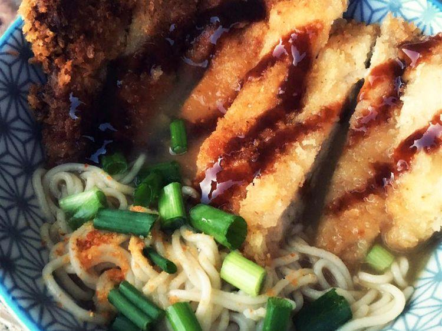

Tonkatsu Shoyu Ramen (Pork Cutlet Soy Sauce Ramen)

If you have ever wanted to make Japanese noodle house ramen, this tonkatsu recipe is for you.
Ingredients
- 1 large egg
- 1 1/2 teaspoons spicy sesame oil
- 2 (1x3 inch) boneless pork chop slices
- 2 tablespoons olive oil
- 1 tablespoon black sesame seeds
- 2 leaves fresh basil
- 1 leaf fresh sage
- 1 (3 ounce) package instant ramen noodles
- 3 tablespoons shredded dried kombu
- 1 3/4 tablespoons bonito soup stock
- 1 3/4 tablespoons soy sauce
- 1/2 teaspoon white miso paste with dashi
- 1 green onion, sliced
Steps
- Fill a small pot halfway with water. Bring to a boil; add egg and cook in boiling water for 15 minutes. Drain. Run cold water over egg and set aside to cool.
- Pour sesame oil into a large skillet. Lay pork slices in oil. Cover pork with 1 tablespoon olive oil, 1/2 tablespoon sesame seeds, 1/2 of the basil, and 1/2 of the sage. Flip and cover pork with these remaining ingredients.
- Cook pork, covered, over medium-low heat, until evenly browned on the bottom, about 5 minutes. Flip and continue cooking until second side is browned, about 5 minutes more. Remove from heat.
- Bring a large pot of water to a boil. Cook ramen noodles in boiling water until tender, about 3 minutes. Drain in a colander set in the sink; rinse noodles until water runs clear. Return noodles to the pot.
- Stir kombu, bonito stock, soy sauce, and miso paste into noodles. Cook, stirring with chopsticks, over medium heat, until miso paste is dissolved, 3 to 5 minutes. Transfer noodles to a serving bowl.
- Peel and cut egg in half lengthwise. Place egg, pork slices, and fish paste slices over noodles. Garnish with tonkatsu sauce, ginger, green onion, and black pepper.